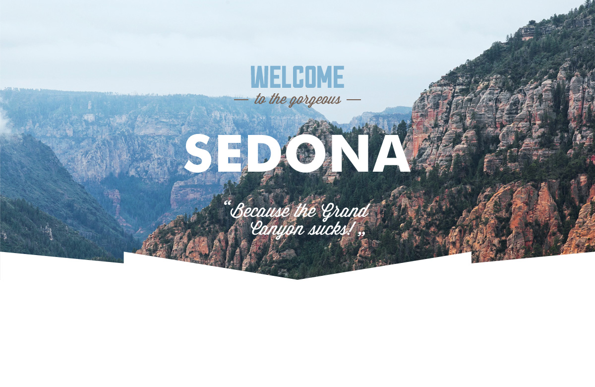

Седона
 Седона — небольшой городок в АРИЗОНЕ, заслуживающий большего!Рассмотрим 5 причин, по которым Седона круче, чем гранд каньон!
Преимущества
Настоящий городок
— №1 —
Седона — не аттракцион для туристов, там течёт своя жизнь

Жилье
Рекомендуем пожить в настоящем мотеле, все как в кино!
Еда
Всегда заказывайте фирменный бургер, вы не разочаруетесь!
Сувениры
Не только китайского, но и местного производства!
Там есть мост дьявола
— №2 —
Да, по нему можно пройти! Если конечно вы осмелитесь
Небольшая площадь
— №3 —
Все достопримечательности находятся очень близко
Красивая дорога
— №4 —
Ехать в Седону из Лас-Вегаса совсем не скучно!
Мало туристов
— №5 —
Большинство едет в гранд каньон и толпится там
Заинтересовались?
Укажите предполагаемые даты поездки, и мы покажем вам лучшие предложения гостиниц в седоне